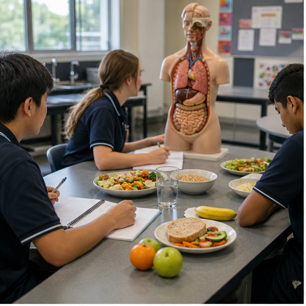
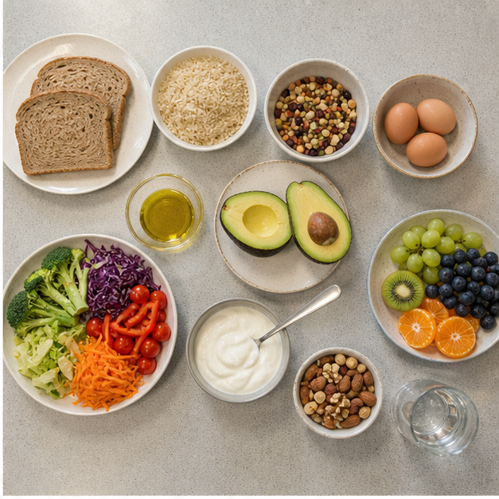
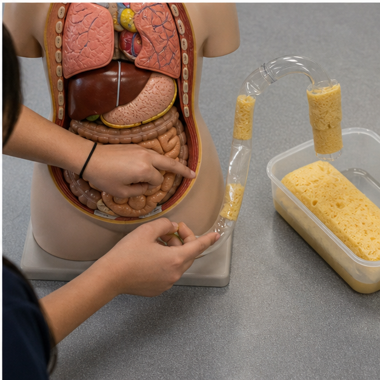

Class presentation
Module 2 — 8-slide lesson deck
Use the deck to introduce the three connected ideas, pause for decisions and hand evidence into the learning packages.

{kind=link}
Section 2.1
Six nutrients and their roles
Learning intention: Explain the main roles of carbohydrate, protein, fat, vitamins, minerals and water, and connect varied foods to complementary body functions.
Success looks like
- I can distinguish energy-yielding nutrients from regulatory nutrients.
- I can link each nutrient group to varied food sources.
- I can explain why one food or supplement cannot replace variety.
Nutrients work as a team
Nutrients are substances in food used for energy, growth, repair and regulation. The common six-group model names carbohydrate, protein, fat, vitamins, minerals and water. Carbohydrate, protein and fat can supply energy measured in kilojoules, while vitamins, minerals and water support processes without supplying usable energy in the same way. Foods contain combinations: milk can provide water, protein, carbohydrate, varying fat, vitamins and minerals. Food-based reasoning is therefore stronger than matching one food to only one nutrient.

Carbohydrate and available energy
Carbohydrate is broken down mainly to glucose, an important fuel for body cells during physical and mental activity. Grain foods, fruit, starchy vegetables, legumes, milk and yoghurt can contribute carbohydrate. The source changes the fibre, micronutrients and food structure that arrive with it. Wholegrain bread and confectionery both contain carbohydrate but are not nutritionally interchangeable. Calling every carbohydrate food “sugar” hides these differences and produces weak meal decisions.
Protein for structure and function
Protein supplies amino acids used to build and repair tissues and make enzymes, hormones and immune-system components. Meat, poultry, fish, eggs and dairy are familiar sources, while legumes, tofu, nuts, seeds and grains also contribute. The body continually turns proteins over, so needs are supported by a varied pattern rather than one oversized serve. Protein is not only for athletes, and more is not automatically better; the whole pattern and the person's needs matter.
Fat, vitamins and minerals
Fat provides concentrated energy, forms cell membranes, supports insulation and helps absorb fat-soluble vitamins. Type and source matter: unsaturated fats from nuts, seeds, avocado, fish and plant oils differ from patterns high in saturated fat. Vitamins and minerals perform many specific roles. Iron supports oxygen transport, calcium contributes to bones and teeth, and vitamin C supports several processes and improves absorption of non-haem iron. No single fruit, vegetable or tablet supplies every need.
Water, fibre and variety
Water transports substances, supports temperature control and enables many body reactions. Needs change with heat, activity, illness and food intake. Dietary fibre is not one of the six nutrients in the simple model, yet it is a vital food component that supports bowel function and parts of the gut microbiome. Fibre comes mainly from plant foods. A varied pattern across the Australian Guide to Healthy Eating groups helps provide complementary nutrients and fibre without expecting one food to do every job.
Equivalent pathway — no video required
Nutrient-team food map
Purpose prompt: No video is required. Which two foods contribute to the same body function through different nutrient combinations?
Name the foods visible in the overhead spread. Link each chosen food to at least two possible nutrient contributions, group the links under energy, growth and repair or regulation, and explain why variety matters more than placing each food in only one box.
Learning package 2.10/10 + response
Use each explanation to repair your thinking as you go. All work saves only in this browser on this device.
Knowledge checks
Long response
Response scaffold
- List the foods and their roles in the meal.
- Connect each food to at least two nutrients or useful components.
- Group contributions under energy, growth/repair and regulation.
- Explain why overlapping contributions are useful.
- Evaluate the ‘superfood’ claim.
Quality criteria
- Uses all six nutrient groups accurately.
- Includes fibre without mislabelling it in the six-group model.
- Explains functions through cause and effect.
- Avoids moral good/bad labels.
Folio handoff: Save as “M2.1 Nutrient-team lunch” with a labelled food image and three-function map. Open My folio.
0/10 checks saved · long response still needs detail
Resume this packageSection 2.2
Energy, growth and repair
Learning intention: Explain energy balance and nutrient density, then apply both ideas to a realistic adolescent meal decision.
Success looks like
- I can explain energy intake and use over time.
- I can distinguish kilojoules from nutrient density.
- I can justify a choice using context, portion and overall pattern.
Energy is measured, not moralised
Food energy is measured in kilojoules. The body uses energy continuously for breathing, circulation, temperature control, movement, learning, growth and repair. A food supplying more kilojoules is not automatically “bad”, and a lower-kilojoule food is not automatically suitable. Ask whether the amount and nutrient contribution fit the person, activity and wider pattern. Language such as fuel, contribution and balance supports stronger reasoning than guilt-based labels.
Balance operates over time
Energy balance is the relationship between energy consumed and used. Both sides change: growth, body size, physical activity, sleep, illness and other factors influence needs; portions and patterns influence intake. The body does not restart at midnight or judge one snack alone. Persistent imbalance over time can affect health, but one meal cannot prove a person's pattern. Students should compare contexts rather than calculate a perfect personal requirement without qualified advice.
Nutrient density adds a lens
Nutrient density considers useful nutrient contribution relative to energy. Yoghurt, fruit, legumes or a wholegrain sandwich can supply energy alongside protein, fibre, vitamins or minerals. This does not require every choice to maximise nutrients; enjoyment, culture, access and convenience also matter. It means kilojoules alone are incomplete evidence. Two options with similar energy can support the body differently because their nutrients and food structures differ.
Build a sustaining meal
A sustaining meal often combines a carbohydrate source, protein-rich food, vegetables or fruit and water, with fats and flavours that make it satisfying and culturally meaningful. Carbohydrate supplies accessible energy, protein supports growth and repair, and fibre and food structure support fullness and digestion. Combinations can be vegetarian, culturally specific or adapted to access and allergy needs. Balance is a design task: identify the eater's purpose, then combine complementary foods.
Labels without false precision
Nutrition panels support energy comparison, but serving sizes may differ and may not match the actual portion. Per 100 g or 100 mL standardises comparison; per serve estimates the planned meal. Neither gives a complete health verdict. A defensible decision combines amount, nutrient profile, ingredients, context and frequency. Individual energy or medical advice belongs with an appropriate health professional, not a social-media rule or an unverified calculator.
Equivalent pathway — no video required
Context changes the meal decision
Purpose prompt: No video is required. How do activity and timing change what counts as a suitable meal?
Use the wrap-preparation image to identify possible carbohydrate, protein, plant-food and fluid contributions. Then compare the two written lunch options in Applied activity 2.2 for the supplied sport context, naming the portion or label evidence still needed.
Learning package 2.20/10 + response
Use each explanation to repair your thinking as you go. All work saves only in this browser on this device.
Knowledge checks
Long response
Response scaffold
- Describe the eater's activity and timing.
- Compare options on a common basis and realistic portion.
- Identify carbohydrate, protein, plant-food and fluid contributions.
- Explain nutrient density without automatically choosing the lowest kilojoules.
- State a decision and one context change that could reverse it.
Quality criteria
- Keeps kilojoules and nutrient density distinct.
- Connects choice to growth, activity and repair.
- Considers portion and pattern.
- Uses neutral health language.
Folio handoff: Save as “M2.2 Context-based meal decision” with an evidence table and conditional recommendation. Open My folio.
0/10 checks saved · long response still needs detail
Resume this packageSection 2.3
Digestion and nutrient absorption
Learning intention: Trace mechanical and chemical processing through the digestive system and explain how structure supports absorption.
Success looks like
- I can sequence major digestive organs and roles.
- I can distinguish digestion from absorption.
- I can explain enzymes, bile, villi, water and fibre.
Digestion makes usable forms
Digestion breaks large food structures and molecules into smaller forms able to cross the digestive tract wall. Mechanical digestion physically reduces and mixes food; chemical digestion uses enzymes and stomach acid to change molecules. They work together because chewing increases surface area for enzymes. Digestion is not absorption. Digestion prepares nutrients; absorption moves suitable small molecules into blood or lymph for transport to body cells.

Mouth to stomach
Teeth break food apart and saliva moistens it; salivary enzymes begin digestion of some carbohydrate. Swallowing moves the bolus through the oesophagus by muscular contractions called peristalsis, not gravity alone. In the stomach, muscular mixing combines food with acidic juice and enzymes that begin substantial protein digestion. The stomach does not complete the whole process or absorb most nutrients; it releases partly digested material into the small intestine.
Small intestine and supporting organs
Most chemical digestion and nutrient absorption occur in the small intestine. Enzymes from the intestinal lining and pancreas help break down carbohydrate, protein and fat. The liver produces bile, stored in the gall bladder and released into the small intestine. Bile disperses fat into smaller droplets, increasing surface for fat-digesting enzymes; bile is not an enzyme. Folds, villi and microvilli create a very large absorption surface.
From intestine to cells
Sugars and amino acids cross into blood, while many fat-digestion products enter lymph before reaching blood. Circulation carries absorbed materials to the liver and other tissues for use, change or storage. Villi have thin surfaces and dense vessel networks, supporting efficient transfer. Saying “food goes straight into the blood” is inaccurate: food is digested, selected molecules cross specialised surfaces, and transport systems distribute them.
Large intestine, water and fibre
Unabsorbed material enters the large intestine. Water and some dissolved substances are absorbed, while gut microorganisms interact with undigested components including some fibres. Fibre adds bulk and supports movement; it is not useless waste. Remaining material forms faeces for elimination. Hydration and varied plant foods support digestive function, but symptoms have many causes and should not be self-diagnosed from a course website.
Verified video pathway
Watch: How your digestive system works — Emma Bryce
Purpose prompt: Watch for the difference between moving food, breaking molecules down and absorbing nutrients.
Use the classroom digestive-system model as an orientation image. Build a text flowchart from mouth to large intestine with three columns—organ, mechanical or chemical change, and what moves next—then mark only the absorption sites supported by the theory.
Learning package 2.30/10 + response
Use each explanation to repair your thinking as you go. All work saves only in this browser on this device.
Knowledge checks
Long response
Response scaffold
- Sequence the major organs.
- Separate movement, mechanical change and chemical change.
- Explain enzymes and bile without calling bile an enzyme.
- Show how sugars, amino acids and fat products enter transport.
- Use villi and large-intestine function to evaluate the claim.
Quality criteria
- Distinguishes digestion, absorption and transport.
- Explains mechanisms rather than listing organs.
- Connects surface area to chewing and villi.
- Includes water and fibre.
Folio handoff: Save as “M2.3 Journey of a mixed meal” with an organ flow and digestion-versus-absorption key. Open My folio.
0/10 checks saved · long response still needs detail
Resume this packageEnd-of-module review
Check, repair and save
- Revisit Six nutrients and their rolesContinue
- Revisit Energy, growth and repairContinue
- Revisit Digestion and nutrient absorptionContinue
Open this module’s Applied Learning Activities · Open its media pathways · Keep selected evidence in My folio